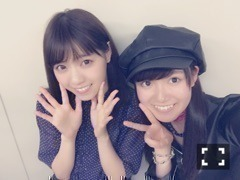
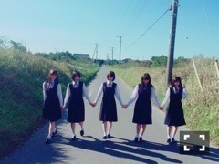

| 2016/10 23 Sun | ひめたん-0o0-その677 |
16thシングル「サヨナラの意味」
MV公開されました！
youtube公式チャンネルから
期間限定でフル公開だそうなので
是非ご覧ください( ˇωˇ )

今日は個別握手会でした
遊びに来てくださった皆さん
ありがとうございました！
とっても楽しい一日でした～
「サヨナラの意味」
曲やMVの感想聞けたり、
16thに向けてのエールいただきました！
これから披露する機会が
たくさんあると思うので待ってて下さい！
一回一回大切に歌います～＊

らじらーでお話しした、
生駒先生がコーディネートしてくれた服
1.2部限定で着ました！
いっぱい褒められた(´,,•ω•,,｀)
ありがとう生駒先生！
日曜の夜は、らじらー！サンデー
10/16のゲストは
声優アーツに下地紫野さん、
乃木坂から西野七瀬ちゃんでした！
なぁちゃんは初登場ということでしたが
ジョジョトーク盛り上がってたな～
「な～なせっ」は
早速今日の握手会で
皆さん言えたのかしら(´,,•ω•,,｀)
らじらーで生まれたネタが
握手会で会話のきっかけになることが
よくあるとメンバーから聞くので
嬉しい限りです♡♡
なぁちゃんまた来てね！

さて、次回のらじらー！サンデーは
乃木坂から 堀未央奈ちゃん、
北野日奈子ちゃん、中田花奈ちゃん、
寺田蘭世ちゃんの登場です！
サンクエトワール再びo(^o^)o
16thカップリング楽曲
「君に贈る花がない」
初解禁させていただく予定です！
サビ聴いた時に、一年前の歌声と
変わってないようで
やっぱり少し変わってて......
いや、だめだなつい語ってしまう、
これ以上は聴いてもらおう。
メールテーマはそのうち
バナーができると思うので是非！
宛先はこちら

舞台「墓場、女子高生」
観てきました～
間に合ってよかった！
今日 万理華と久々に会った気がして
舞台のこと私が延々語ってたら
「ちゃんと観てたんだ。びっくり。
楽屋挨拶でひめたん感想とか
何も言わないから......」と。
寝てないよ！！！！！笑
ひめたんドライだねと言われるのは
私のこーゆーところなのかと
ハッとしました。
たくさん笑ったし、
途中ちょっとうるっときそうになったし、
正解はないんだろうけれど、
最後のシーンは色々と考えさせられたよ。
メンバーのみんな、出演者の皆様、
全16公演お疲れ様でした。
～お知らせ～
雑誌
10/31 BUBKA 12月号
イベント
10/24 シブヤノオト公開収録
10/28 日テレ HALLOWEEN LIVE
TV
11/7～11/11 ZOOM UP!
リリース
11/9 16thシングル「サヨナラの意味」
(＊´・ω・＊)
コメント(539)
2016/10/23 23:18